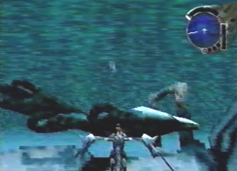
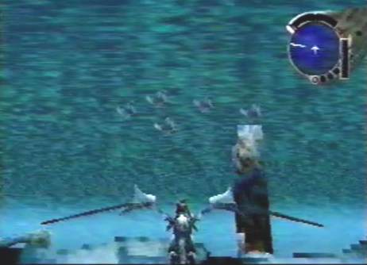
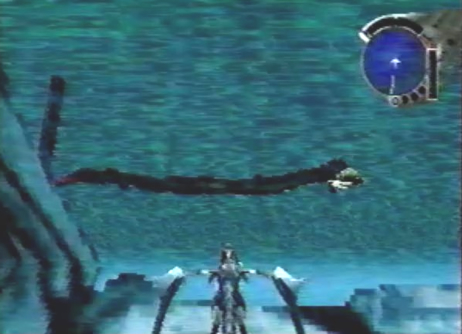

Kinoshita Whale
|
Info When I first laid eyes on these giant creatures, I couldn't believe they still existed. I had previously thought they had all been extinct. I guess I was wrong! As I observed the creatures behavior, they seemed to want a lot of attention. When the dragon shot a laser at their heads, they became playful and knocked over the 2 Keystones, allowing us to enter the Uru Passage. |

Underwater Sea life  |
 |
 |
Info While flying through the Uru passage, we observed an abundance of wondrous sea life. The aquatic life I saw consisted of: gigantic creatures with bushy tails and pointed heads, schools of odd fish and a few giant eels. |